Tema 2: El Nacimiento de los Nacionalismos y la Crisis de 1898
El cuestionamiento del centralismo uniformista liberal, la emergencia de las identidades nacionales de Cataluña, el País Vasco y Galicia, el pleito insular canario, y la dramática pérdida del imperio colonial en el Desastre de 1898.
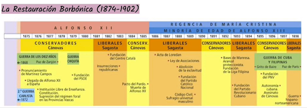
Eje cronológico que delimita las etapas fundamentales del surgimiento nacionalista y la crisis imperial de 18981. El Surgimiento de los Nacionalismos Periféricos
El surgimiento y consolidación de las corrientes regionalistas y nacionalistas en las últimas décadas del siglo XIX no fue un hecho fortuito, sino el resultado de profundos problemas estructurales arrastrados desde el inicio de la construcción del Estado liberal. El régimen liberal e isabelino se asentó sobre una rígida organización centralista e uniformadora a imitación del modelo estatal francés, deparando la división provincial uniforme decretada por Javier de Burgos en 1833.
Esta rígida estructura territorial pretendió omitir las realidades históricas y deparó el resurgimiento de identidades culturales periféricas. La andadura patrimonialista y corrupta del Estado a manos de la oligarquía moderada causó un descrédito absoluto del poder central como motor de cohesión nacional o proyecto común. Aunque el gobierno encargó a eruditos oficiales la redacción de extensas Historias Generales de España orientadas a justificar la unidad indiscutible e histórica de la patria, el intento quedó relegado a círculos intelectuales burgueses lejanos del pueblo llano.
Asimismo, el Estado burgués fue sumamente débil e ineficaz a la hora de modernizar la sociedad, destinando muy pocos fondos a las obras públicas, carreteras o a la educación de la población. Esto deparó que España en el siglo XIX fuera un país de centralismo legal pero de localismo y comarcalismo real, una federación de comarcas mal unificadas e incomunicadas. La inexistencia de una verdadera burguesía nacional cohesionada con un proyecto unitario dio paso a burguesías regionales diferenciadas y desconectadas en sus intereses comerciales.
La conjunción de estos particularismos con el influjo literario del Romanticismo europeo propició un renacer cultural en aquellas comarcas que gozaban de mayor independencia y pujanza económica, fundamentalmente Cataluña y el País Vasco, cimentando la defensa de sus peculiaridades forales frente al uniformismo liberal.
2. El Nacionalismo Catalán
En Cataluña, el nacionalismo se estructuró inicialmente a través de un movimiento puramente cultural e idiomático denominado la Renaixença. Su objetivo prioritario fue la recuperación de la lengua vernácula catalana y el fomento de los estudios literarios, históricos y artísticos propios, reuniendo de forma progresiva las aspiraciones de la burguesía industrial textil, las clases medias urbanas, y las añoranzas tradicionales o religiosas del agro foral catalán.
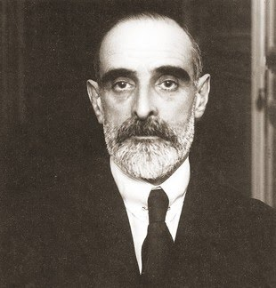
Enric Prat de la Riba, uno de los grandes ideólogos del catalanismo políticoLa Evolución del Catalanismo
El paso del regionalismo de biblioteca a la movilización política vino determinado por la derrota del carlismo en 1876 y el fin de la República Federal en 1874. Las bases federalistas y los defensores de los fueros tradicionales se vieron obligados a abandonar sus dogmas estériles y confluir en un catalanismo político unificado bajo dos corrientes doctrinales divergentes:
- La Vía Demócrata y Federalista de Valentí Almirall: De corte laico, abanderó la corriente del catalanismo progresista moderno orientado a "rehacer España" desde una óptica catalana. En su obra fundamental, Lo catalanisme (1886), defendió la necesidad de respetar las costumbres de las comarcas tradicionales y reclamó las divisiones "naturales" deparadas por la geografía agraria frente a la provincia "artificial" uniformadora. Almirall fundó el Centre Català en 1882 para unificar a republicanos y conservadores, impulsando el célebre Memorial de Agravios presentado a Alfonso XII en 1885 contra el proteccionismo roto y el olvido de las leyes catalanas.
- La Vía Tradicionalista y Católica de la Lliga de Catalunya (1887): Descontentos con el laicismo de Almirall, los sectores burgueses conservadores fundaron su propia asociación, defendiendo un catalanismo afín a la monarquía católica. En 1888 presentaron a la reina regente un programa regionalista de amplia autonomía administrativa similar al compromiso alcanzado entre Austria y Hungría en 1867. Su corpus se definió en la obra del obispo Torras y Bages, La tradició catalana (1892), planteando que la esencia catalana descansaba sobre la familia tradicional, el clero y las leyes tradicionales agrarias.
Ambas corrientes terminaron confluyendo bajo el esfuerzo pacificador de Enric Prat de la Riba, quien fundó la Unió Catalanista en 1891. En su primera asamblea solemne, celebrada en 1892, se firmaron las célebres Bases de Manresa, que constituían un anteproyecto de constitución regional catalana que defendía el autogobierno de las comarcas, una asamblea legislativa propia y una división de competencias entre el Estado español y la autonomía catalana, unificando de forma indisoluble el catalanismo conservador y el federalismo económico.
3. El Nacionalismo Vasco
A diferencia de la Renaixença catalana de cariz urbano e industrial, el nacionalismo en el País Vasco tuvo unas peculiaridades doctrinales diametralmente opuestas, naciendo en sus inicios en el seno de una burguesía tradicionalista agraria profundamente católica y reaccionaria frente a los avances de la modernidad industrial del metal y de las minas.
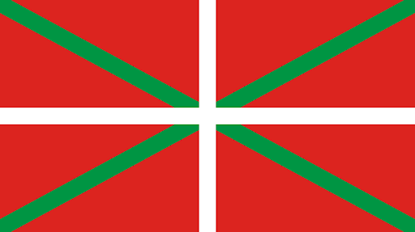
La Ikurriña, la bandera diseñada por los hermanos Arana en 1894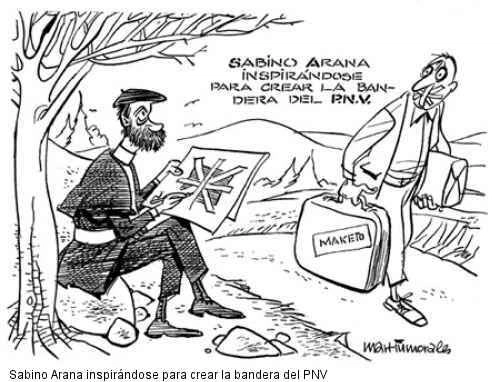
Retrato del fundador del nacionalismo vasco Sabino Arana GoiriLos Factores Desencadenantes
La abolición definitiva de los fueros históricos deparada por la ley estatal de marzo de 1876 precipitó dos corrientes doctrinales enfrentadas:
- Los Transigentes: Sectores de la alta burguesía industrial del hierro vizcaíno y de la banca que rentabilizaron políticamente la pérdida foral para pactar con el gobierno de Madrid lucrativos Conciertos Económicos en provecho propio, garantizando su riqueza mercantil.
- Los Intransigentes Realistas: Pequeños propietarios agrícolas y carlistas empobrecidos que rechazaban la invasión obrera y siderúrgica industrial. Veían el boom minero y el éxodo masivo de inmigrantes españoles (maketos) como una agresión intolerable a la esencia racial, idiomática y moral del pueblo vasco católico tradicional.
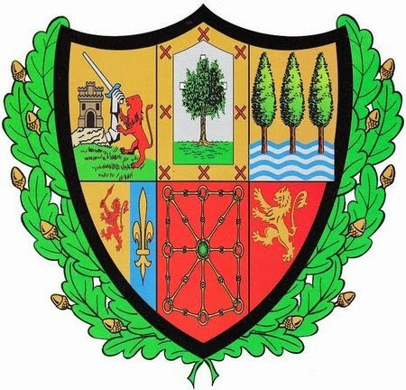
Escudo histórico con las enseñas forales de Guipúzcoa, Vizcaya y Álava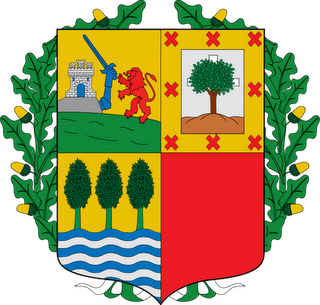
Lema Laurak Bat (Las cuatro provincias unidas) como símbolo cultural foralLa Ideología de Sabino Arana
En este ambiente de agravio foral agrario, Sabino Arana Goiri fundó el Partido Nacionalista Vasco (PNV) en Bilbao el 31 de julio de 1895. Bajo el lema carlista tradicional de «Dios y Ley Vieja» (Jaun-Goikua eta Lagi-Zarra, JEL), Arana estructuró una doctrina de carácter profundamente étnico, religioso e independentista:
- Exaltación Racial de la Etnia Vasca: Consideraba que el pueblo vasco constituía una raza separada e históricamente superior que debía preservarse mediante la oposición estricta a los matrimonios con maketos españoles procedentes de fuera.
- Integrismo Católico Absoluto: Defendía el sometimiento pleno de la vida civil y política del Estado a los dogmas eclesiásticos y las directrices del Papa.
- Independencia y Soberanía Original: Planteaba la restauración foral total y la unificación de los siete territorios vascos (cuatro peninsulares y tres franceses) en una federación soberana que denominó Euzkadi.
- Promoción y Defensa del Idioma: Euskaldunización de la sociedad mediante la defensa del euskera, rechazando el castellano como un idioma extranjero y pernicioso.
Con el paso de los años y tras la muerte de Arana, el PNV se vio obligado a moderar sus planteamientos radicales antiespañoles para dar entrada a la burguesía industrial urbana vizcaína, surgiendo la incombustible tensión interna entre los independentistas ideológicos y los autonomistas prácticos, equilibrio que marcaría la vida del partido durante décadas.
4. El Regionalismo Gallego
El regionalismo en Galicia, conocido como el Rexurdimento literario finisecular, deparó notables diferencias con respecto a los de Cataluña o el País Vasco. Por un lado, fracasó en la edificación de una plataforma o partido político con representación parlamentaria homogénea por culpa del analfabetismo y del enraizamiento caciquil agrario gallego.
No obstante, construyó una sólida y profunda base doctrinal identitaria basada en la singularidad histórica, lingüística, cultural y celta de Galicia. Intelectuales de la talla de Manuel Murguía (esposo de la poetisa Rosalía de Castro) y Alfredo Brañas (teórico del regionalismo tradicionalista en su obra El Regionalismo) estructuraron un modelo que no pretendía la independencia del Estado, sino un marco de descentralización político-administrativa que designaron formalmente con el término contemporáneo de Autonomía.
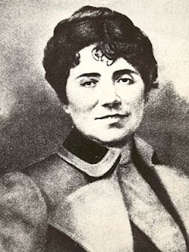
Rosalía de Castro, la gran poetisa e impulsora del Rexurdimento cultural gallego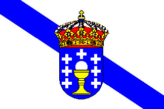
La bandera regional de Galicia inspirada en el escudo de la Cofradía portuaria🏛️ El Pleito Insular en Canarias: La lucha por la división provincial
En Canarias, el cuestionamiento de la administración central se manifestó de forma conflictiva y duradera a raíz de la reforma provincial de Javier de Burgos de 1833, que impuso un modelo de provincia única con su capitalidad en Santa Cruz de Tenerife.
Esta decisión provocó de forma inminente el estallido del pleito insular, dividiendo y enfrentando de forma enconada a las burguesías mercantiles y agrarias de las dos islas mayores:
- La burguesía terrateniente de Tenerife y su capital, defensores a ultranza de la capitalidad única oficial por motivos de prestigio civil y de captación de fondos del Estado.
- La burguesía comercial de Gran Canaria, que vio aliviada su posición económica tras la Ley de Puertos Francos de 1852 y la construcción del Puerto de La Luz. Apoyados en su intensa relación comercial de fletes hortofrutícolas y de carboneo con las navieras británicas, organizaron un fuerte movimiento social e institucional que reivindicaba de forma unánime ante las Cortes Generales en Madrid la división del archipiélago en dos provincias independientes.
El pleito insular bloqueó sistemáticamente el desarrollo de las obras públicas regionales contemporáneas y la cohesión de las administraciones, un conflicto civil permanente que no encontraría solución definitiva hasta la división de 1927 decretada por la dictadura de Primo de Rivera.
5. El Desastre del 98 y el Clímax de la Crisis
A finales del siglo XIX, tras la independencia de la mayor parte del continente americano en 1824, el antaño inmenso imperio colonial español había quedado reducido a las posesiones insulares de las Antillas (Cuba y Puerto Rico) en el Caribe, y el archipiélago de las Filipinas y la Micronesia en el océano Pacífico. El drama colonial de la Restauración se estructuró a raíz de un injusto sistema comercial de explotación arancelaria imperial impuesto desde Madrid:
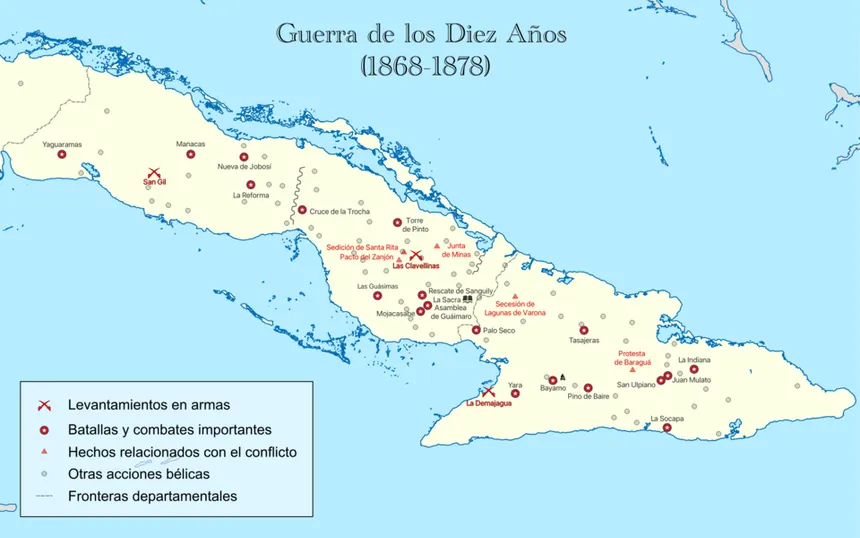
Imagen 9: Mapa de la isla de Cuba, la perla de las Antillas y foco del conflicto contra EspañaEl gobierno español deparó para Cuba y Puerto Rico una consideración de mercado cautivo, es decir, las islas estaban legalmente obligadas a comprar de forma exclusiva los productos textiles de Cataluña y el trigo y harina de Castilla a precios artificialmente inflados por altos aranceles, impidiéndoles comerciar de forma ventajosa y barata con su vecino natural y principal socio comprador de azúcar y tabaco: los Estados Unidos de América.
El Desarrollo de los Conflictos Bélicos
La ineficacia y retraso en la aplicación práctica de los compromisos de autonomía firmados en la Paz de Zanjón (1878) depararon el estallido en febrero de 1895 de una nueva y definitiva sublevación independentista en Cuba, conocida históricamente como el Grito de Baire. El levantamiento fue planificado por el Partido Revolucionario Cubano fundado por el escritor y poeta José Martí, quien firmó el Manifiesto de Montecristi proclamando la guerra de liberación nacional.
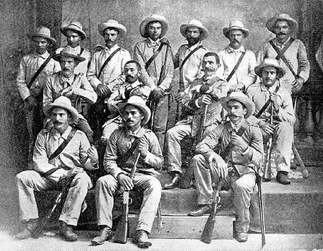
Imagen 10: Tropas regulares españolas operando en la inhóspita manigua cubana contra los insurrectos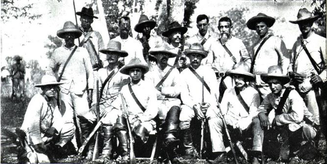
Imagen 11: Guerrilleros mambises cubanos armados con machetes para el combate directoAnte la ineficacia negociadora inicial del general Martínez Campos, el gobierno conservador de Cánovas confió la capitanía militar de la isla al enérgico general Valeriano Weyler, quien entabló una implacable guerra de desgaste. Weyler procedió a concentrar forzosamente a la población rural campesina en poblados vallados bajo control del ejército (la reconcentración) para cortar los suministros y víveres a los guerrilleros (mambises), y dividió la isla mediante líneas fortificadas de trincheras denominadas trochas. Esta política, si bien limitó los avances de las partidas guerrilleras, deparó un dantesco e intolerable coste humano para la población reconcentrada civil, que falleció por decenas de miles a causa de hambrunas generales y brotes infecciosos de paludismo o tifus.
Por su parte, los mambises aplicaron una táctica de guerrilla muy depurada: su arma favorita era el machete de caña, y preferían dejar malherido al soldado español que matarlo, ya que la evacuación del herido inmovilizaba a otros dos combatientes y desbordaba de forma inmediata los deficientes hospitales y la caótica logística de la sanidad militar española de retaguardia.
La Intervención de los Estados Unidos
La burguesía estadounidense deseaba intervenir militarmente en Cuba debido a sus cuantiosas inversiones en ingenios azucareros y al interés geoestratégico de consolidar su hegemonía en Centroamérica. La prensa sensacionalista estadounidense (prensa amarilla* de Hearst y Pulitzer) jaleó el rechazo al colonialismo español, alimentando una campaña belicista que estalló tras la misteriosa explosión del acorazado estadounidense USS Maine en la bahía de La Habana el 15 de febrero de 1898, costando la vida a 254 tripulantes. Los EE.UU. culparon sin pruebas a España y declararon la guerra de forma inmediata en abril de 1898.
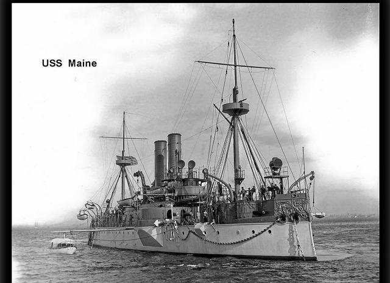
Imagen 12: Ilustración de la prensa amarilla estadounidense sobre la trágica explosión del USS MaineLa contienda contra la emergente potencia industrial de los Estados Unidos fue sumamente efímera y se decidió íntegramente en el plano naval. La obsoleta flota moderna española fue aniquilada en la batalla de Cavite (Filipinas) y en el dramático hundimiento de la escuadra del almirante Cervera en Santiago de Cuba ante la superioridad de los acorazados norteamericanos. España se vio forzada a firmar la capitulación de la Paz de París el 10 de diciembre de 1898, cediendo de forma incondicional a los EE.UU. las islas de Puerto Rico, Filipinas y Guam, mientras que Cuba lograba su independencia formal bajo el estricto tutelaje y control militar estadounidense (Enmienda Platt). Al año siguiente, para sanear la Hacienda, el gobierno de Madrid vendió a Alemania las últimas islas del Pacífico (Carolinas, Marianas y Palaos) por 25 millones de pesetas.
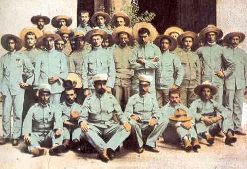
Imagen 13: La iglesia del sitio de Baler, defendida heroicamente durante un año por un destacamento español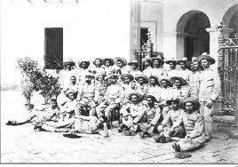
Imagen 14: Los supervivientes de Baler, los últimos de Filipinas, tras deponer las armas ante los rebeldes de Aguinaldo